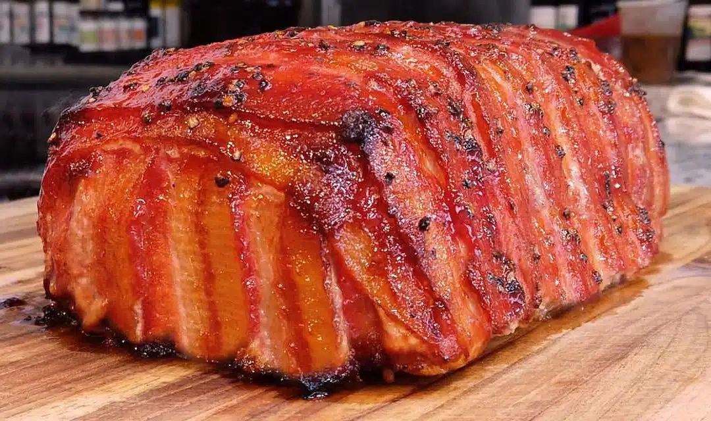

Home
The Best Meatloaf Recipe Ever

Odin's Review
This is the only meatloaf recipe worthy of your time since all other
meatloaves are made with an average of four or five sub-par ingredients.
This meatloaf is full of more than 20 high quality ingredients not the least
of which are three premium cuts of different freshly ground meats. All that
goodness is neatly packaged in a beautiful layer of artistically arranged
bacon, and after eating this you won't bother with any other lesser meatloaf
ever again.
To give credit where it is so richly due, this recipe is the result of the
many years of experience Chef Jean-Pierre has accumulated during his long
career. The Chef calls this his “Famous Meatloaf” because it used to
cause lines outside his restaurant in Florida that wrapped around the block
on Thursday each week when it was featured as a special on his menu. In his
retirement he has generously shared the secrets of his amazing meatloaf
recipe on his YouTube cooking channel to ensure its immortality.
Ingredients
For the Meatloaf
- 1 cup chopped Onion
- 2 tablespoons Olive Oil
- 1 ½ pound Ground Chuck
- ¾ pound Ground Veal
- ¾ pound Ground Pork
- 8 ounces good Ham like black forest diced into 1/4” cubes
- 4 ounces Genoa Salami
- ¾ cup Carrots cut into ¼” dice
- ¼ cup chopped Fresh Thyme leaves
- ¼ cup chopped Fresh Parsley leaves
- 3 large eggs slightly beaten with a fork
- 2 tablespoons chopped Garlic about 4 large cloves
- ¾ cup Fresh Breadcrumbs
- 2 tablespoons Worcestershire Sauce
- Salt and Pepper to taste
- ½ cup Buttermilk
- 1 or 2 dash Hot Sauce
- 1 pound VERY Lean Bacon sliced
For the Glaze
- 2 cups Ketchup
- ¼ cup Brown Sugar
- 2 tablespoons Worcestershire Sauce
- 2 to 3 tablespoons Sweet White Apricot Balsamic Vinegar if you do not have a Sweet White Balsamic skip the Vinegar
- 1 dash Hot Sauce
Instructions
- Preheat Oven to 350 degrees
- For the Meat Loaf:
- In a sauté pan, heat the olive oil, when hot add the onion and cook until light golden brown, remove from the pan and let cool at room temp while you prepare the rest of the recipe.
- In a glass bowl, mix the ground meats, add the ham, salami, carrots, fresh herbs, eggs, garlic, fresh bread crumbs, Worcestershire, salt and pepper buttermilk, hot sauce and the cooled onion mixture, and mix well.
- Cover the entire bottom of a bread loaf pan with the bacon slices, slightly overlapping. Cover the bacon and fill the mold with the ground meat mixture. Close the mold with the bacon as per the video. Flip the loaf onto a baking sheet, remove the pan and bake in the middle of the oven for about 60 minutes.
- However be sure be sure to check the inside temperature after 60 minutes. The Chef’s preferred temperature is 145° to 150°, which is medium and slightly pink. If you like it more cook just leave in a bit longer.
- For the Glaze to Brush on Top of the Meatloaf
- Mix well and using s silicone brush generously brush the glaze on top.